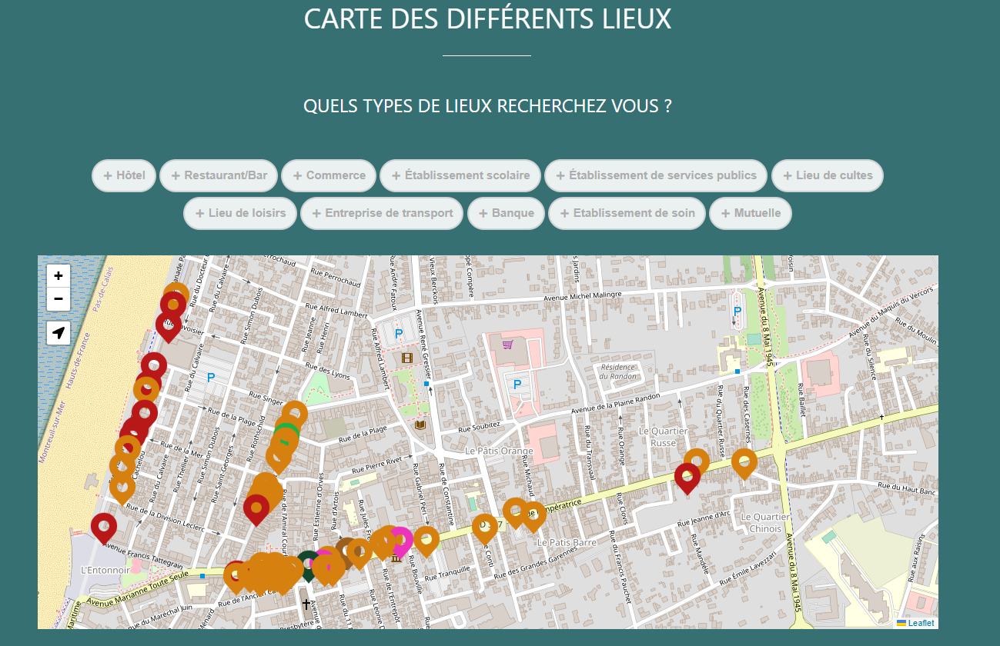

Engagement citoyen
Qu'est ce que l'engagement citoyen
L'engagement citoyen peut être défini comme la participation active et volontaire des individus à des activités et des initiatives visant à améliorer leur communauté ou leur société dans son ensemble. Cela peut prendre de nombreuses formes différentes, telles que le bénévolat, la participation à des manifestations, l'organisation de campagnes de sensibilisation ou bien l'aide aux personnes dans le besoin.
Handitourisme, le site pour les personnes en situation de handicap
L'engagement citoyen est un acte important pour aider les personnes en situation de handicap à participer pleinement à la vie de la société. Les personnes en situation de handicap font face à de nombreux défis qui peuvent les empêcher de s'engager pleinement en société
Pendant mon stage bénévole j'ai pu réaliser un site Web nommé HandiTourisme pour la ville de Berck-Sur-Mer en collaboration avec l'office de tourisme de Berck-Sur-Mer ainsi que le lycée Jan Lavezzari(BTS Tourisme,BTS SP3S)
Le but de ce site Web est de renseigner les différentes informations sur les lieux accessibles, avec un système de filtre par catégorie recherché, ce qui permet donc à une personne en situation de handicap de surmonter des obstacles auquel il peut être confronté comme le manque à l'information ou bien l'accessibilité
Design du système de filtre

Pour se mettre d'accord sur les différentes demandes nous réalisions chaque mercredi une réunion teams aussi appelés sprint présentant nos avancées a l'office de tourisme, ainsi que le lycée Jan Lavezzari, nous permettant de savoir donc ce qui est approuvé ou à revoir ou ce qu'il faut rajouter
Pendant cet engagement citoyen j'ai pu aussi réaliser la création d'un repository GitHub.
Qu'est que c'est GitHub ?
GitHub est une plateforme permettant aux développeurs de sauvegarder, gérer, et collaborer sur des projets contenant des lignes de codes ainsi que de suivre les différentes modifications réalisés tout au long du projetLe principal avantage d'utilisé ce genre de plateformes est de pouvoir revenir en arrière à la moindre erreur le code étant sauvegardé à une date où le code fonctionnait, ce qui permet donc de ne pas perdre tout notre travail.
Design du repository GitHub
Etant en groupe de 3, nous avons décidé de répartir nos tâches avec la méthode agile Kanban avec le logiciel ClickUp selon 3 catégories : à faire, en cours et terminé.Design de la méthode agile
Ce site contient aussi un système de filtre par type de handicap, permettant de sélectionner son type et de filtrer et cacher les lieux non accessible.Design de la carte de Berck-Sur-Mer
 Il permet aussi de renseigner les informations de base et pratique comme• Le numéro de téléphone
• Le nom de l'enseigne
• L'adresse de l'enseigne
Ce filtrage permet donc de laisser seulement les lieux accessibles à un type de handicap et une catégorie donné mais aussi de renseigner les différentes installations présentes sur le lieu
Design des différents lieux de Berck-Sur-Mer
 Voici quelques exemples de renseignements possibles
Voici quelques exemples de renseignements possibles• Parking avec emplacements handicap
• Rampes d'accès extérieures
• Ascenseur ou élévateur
• Espace pour circuler suffisant
• Personnel formé
• Sanitaires pour handicap
En outre en créant ce genre de site webs, cela permet de sensibiliser le public aux problèmes du quotidien auquel les personnes en situation de handicap sont confrontées et donc les encourager à s'engager dans cette cause
Cette sensibilisation se fait grâce au biais de la réputation de la ville de Berck-Sur-Mer étant l'une des plus grandes villes de France accès sur la Santé et l'accessibilité aux personnes en situation de Handicap.
En conclusion, la création d'HandiTourisme a été pour moi un excellent moyen de s'engager dans la citoyenneté, car j'ai pu faire une différence positive dans la vie des autres, afin de créer une société plus inclusive et équitable en luttant contre les inégalités que les personnes en situation de Handicap peuvent subir au quotidien.